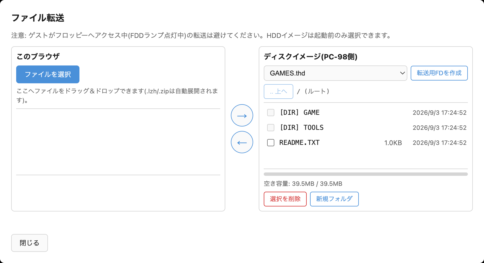
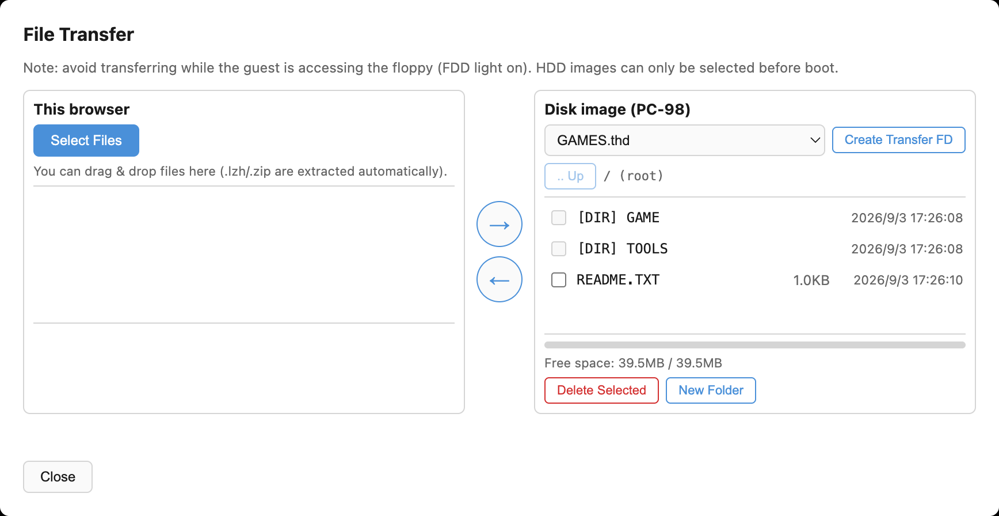
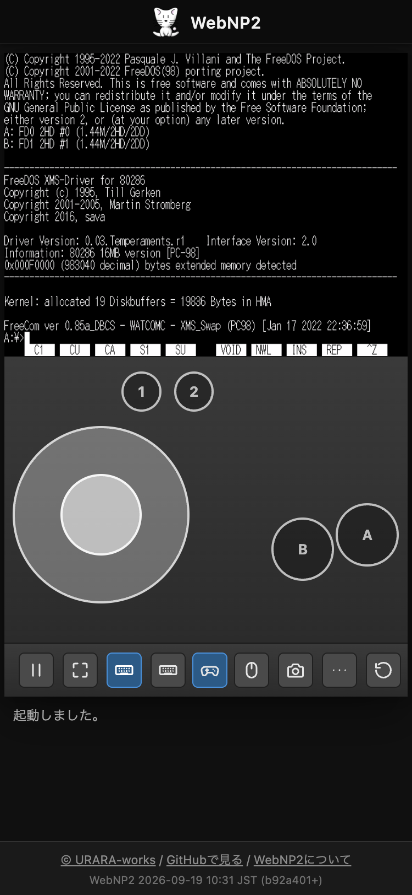
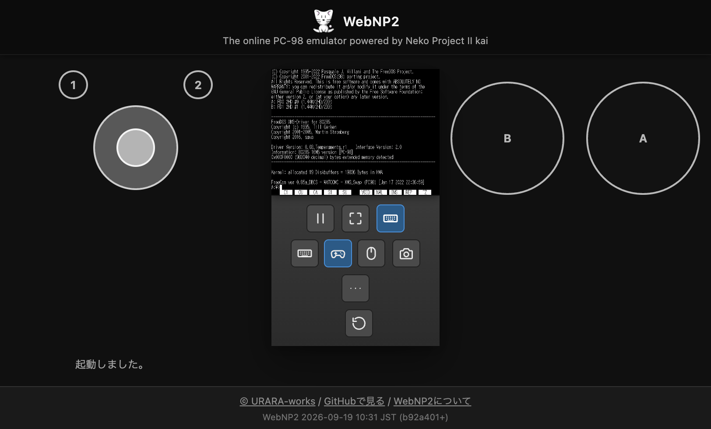
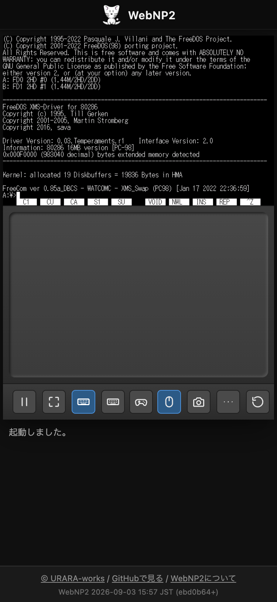
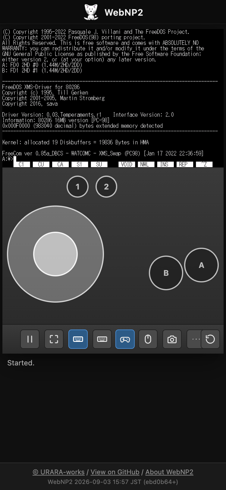
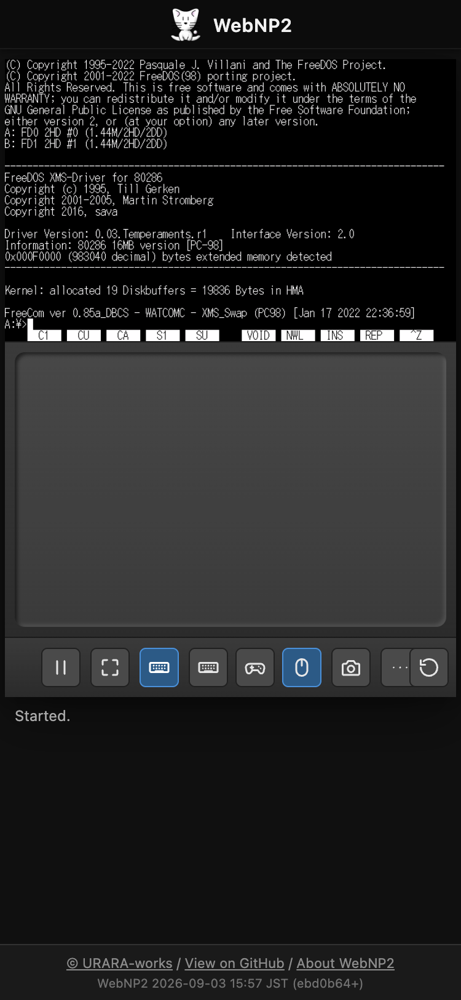
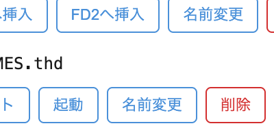
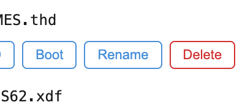

はじめに
WebNP2 は、PC-98 エミュレータ NP2kai の wasm ビルドをブラウザ上で動かす Web プレイヤーです。URL を開くだけで起動でき、 続きから再開できることを目指しています。
ROM・市販ソフトウェアのディスクイメージは一切同梱していません。 手元のHDD/FDイメージを画面へドラッグ&ドロップして読み込ませて使います。
読み込んだディスクイメージは、あなたのブラウザ内(IndexedDB)にのみ保存され、 サーバーへ送信されることはありません。
Introduction
WebNP2 is a web player that runs a WebAssembly build of the PC-98 emulator NP2kai in your browser. The goal is a "just open the URL" experience where you can resume right where you left off.
No ROM images or commercial software disk images are bundled. You load your own HDD/FD images by dragging and dropping them onto the screen.
Any disk image you load is saved only inside your browser (IndexedDB) and is never sent to any server.
起動する
ページを開くと起動オーバーレイが表示されます。URLでディスクイメージを 指定していない場合は「そのまま起動」（イメージ無しで開始し、後から ドラッグ&ドロップで読み込む）と「FreeDOS(98) で起動」（同梱の起動FDで すぐに試す）の2択が、URLでディスクを指定している場合は単一の 「クリックして起動」ボタンが表示されます。ライブラリに保存済みの イメージがあれば「保存済みディスクから起動」も表示されます。 起動するのはこれらのボタンを押した場合だけで、余白をクリックしても起動しません。

ブラウザの音声再生制限により、音声はクリック操作(または自動起動時は 最初のクリック/キー入力)まではミュートになります。
Starting the emulator
A start overlay appears when you open the page. If no disk image is specified via URL, you get two choices: "Start As-Is" (start with no image loaded, then drag & drop one afterward) or "Start with FreeDOS(98)" (try it immediately with the bundled boot floppy). If a disk is specified via URL, a single "Click to Start" button is shown instead. If saved images exist in the library, a "Boot from Saved Disk" button also appears. Only these buttons start the emulator; clicking empty overlay space does nothing.

Due to browser autoplay restrictions, audio stays muted until you click (or, for auto-start, until your first click or key press).
ディスクイメージを読み込む
画面領域にファイルをドラッグ&ドロップすると、拡張子からHDD/FDを 自動判別して読み込みます。
- HDD判定:
.thd.hdi.nhd.hdd -
FD判定: NP2kai本体が受け付ける形式に準拠(
.binは誤検出防止のため対象外)。.d88.d98.fdi.hdm.xdf.dup.2hd.nfd.fdd.hd4.hd5.hd9.h01.hdb.ddb.dd6.dd9.dcp.dcu.flp.tfd.fim.img.ima
画面下部にはFDD1/FDD2/HDDそれぞれのスロット行があり、挿入・ FreeDOS(98)挿入(FDD1のみ)・排出・ブランク作成・ダウンロードの 各ボタンで直接操作できます。
HDDは起動前だけ扱えます。 エミュレータのコアが実行中のHDD挿抜に対応していないため、HDDスロットの ボタン(セット・ライブラリからセット・ブランクHDD作成・取り外し)は 起動前のみ有効です。起動前にHDDをドラッグ&ドロップした場合も、 すぐには起動せずHDDスロットへ「セット」した状態で止まります (スロット名が斜体で表示されます)。中身を整えてから、 起動ボタンで起動してください。
各スロット行の左端にはアクセスランプがあり、そのドライブを 読み書きしている間だけ赤く点灯します(実機のドライブランプと同じ感覚で、 ゲストがディスクを触っているかどうかの目安になります)。

URLパラメータ(?hdd=/?fd1=/?fd2=等)で
イメージを直接指定して開くこともできます。詳細は
READMEのURLパラメータの節
を参照してください。
これらのパラメータには.zip / .lzhを直接
指定することもでき、取得したデータが圧縮ファイルだと自動的に展開
されます。中身が1枚だけならそのまま起動に使いますが、複数枚
含まれる場合はどれを使うか決められないため、run=1を
指定していても自動起動せずディスクライブラリを開いて選ばせます。
?lib=URL(&lib=URL2 のように複数指定可)は、種別
(FD/HDD)を問わずディスクライブラリへ登録するだけの共有リンク用パラメータです。
スロットへは自動挿入せず必ずライブラリを開き、指定時は run=1 でも
自動起動しません。
Loading disk images
Dropping a file onto the screen area auto-detects whether it's an HDD or FD image based on its extension.
- HDD:
.thd.hdi.nhd.hdd -
FD: follows the formats accepted by the NP2kai core itself (
.binis excluded to avoid false positives)..d88.d98.fdi.hdm.xdf.dup.2hd.nfd.fdd.hd4.hd5.hd9.h01.hdb.ddb.dd6.dd9.dcp.dcu.flp.tfd.fim.img.ima
There's an FDD1/FDD2/HDD slot row at the bottom of the player, with buttons for Insert, Insert FreeDOS(98) (FDD1 only), Eject, New Blank, and Download for each drive.
HDDs can only be handled before boot. The emulator core cannot swap a HDD while running, so the HDD slot buttons (Set, Set from library, Create blank HDD, Remove) are enabled only before boot. Dropping a HDD image before boot no longer starts the machine either: it is just set into the HDD slot (the slot name is shown in italics). Prepare its contents, then press the boot button.
Each slot row starts with an access lamp that glows red while that drive is being read or written, just like the drive LED on real hardware — a handy hint that the guest is touching the disk.

You can also open the page with URL parameters
(?hdd=/?fd1=/?fd2=, etc.) to load
images directly. See the
URL parameters section of the README
for details.
These parameters also accept a .zip / .lzh
URL directly — if the fetched content is an archive, it's extracted
automatically. A single disk inside is used right away; if it
contains multiple disks, WebNP2 can't decide which one to boot, so
it skips auto-start (even with run=1) and opens the
Disk Library for you to choose.
?lib=URL (repeatable, e.g. &lib=URL2) is a sharing-link
parameter that only registers images in the Disk Library, regardless of kind (FD/HDD).
It never auto-inserts into a slot — the Library always opens — and skips run=1
auto-boot whenever it's given.
ファイル転送（このブラウザ⇔ディスクイメージ）
「…」→「ディスク」→「ファイル転送」から、FTPクライアント風の 2ペインダイアログを開けます。上/左ペインが「このブラウザ」、 下/右ペインが「ディスクイメージ(PC-98側)」です。

-
「このブラウザ」側は、ファイル選択またはドラッグ&ドロップで
受け取ります。
.lzh/.zipは自動的に 展開され、中身がそのまま一覧に並びます。 - 「ディスクイメージ(PC-98側)」側は、対象(実行中のFDD1/FDD2、 またはライブラリ内のFDイメージ)を選んでから、ファイル一覧の 閲覧・ディレクトリ移動・削除・新規フォルダ作成ができます。 空き容量も表示されます。
- 「転送用FDを作成」ボタンで、フォーマット済み1.2MBのFDイメージを ワンクリックで作り、ディスクライブラリへ保存できます。
- 中央の矢印ボタン(→/←、画面が狭いときは↓/↑)で転送します。 長いファイル名は8.3形式への短縮案を確認してから書き込みます。
実行中のFDDへの転送も安全に行えます。書き込み後は自動的に
排出→再挿入され、ゲストのDOSがメディア交換として認識します。
ただし、ゲストがフロッピーへアクセス中(FDDランプ点灯中)の
転送は避けてください。.d88形式は編集に対応していません。
HDDイメージ(.thd .nhd .hdi
.hdd)は起動前のみ選択できます。
エミュレータが実行中のHDD挿抜に対応していないため、起動後は
一覧に表示されません。
典型的な使い方: 入手したPC-98用フリーウェア(.lzh)を
このブラウザ側へドロップ → 転送用FDへ書き込み → ゲストのDOSから
実行、という流れです。逆方向(ゲスト→ブラウザ、つまり
ダウンロード)も可能です。
File transfer (browser ⇔ disk image)
More (…) → Disk → File Transfer opens an FTP-client-style two-pane dialog. The top/left pane is "This browser" and the bottom/right pane is "Disk image (PC-98 side)".

-
"This browser" accepts files via a file picker or
drag-and-drop.
.lzh/.ziparchives are automatically extracted, and their contents are listed directly. - "Disk image (PC-98 side)" lets you pick a target (a running FDD1/FDD2, or an FD image from the library), then browse the file list, navigate directories, delete files, and create new folders. Free space is also shown.
- The "Create Transfer FD" button creates a formatted 1.2MB FD image with one click and saves it to the Disk Library.
- Use the center arrow buttons (→/←, or ↓/↑ on narrow screens) to transfer files. Long filenames are shortened to 8.3 format, with a confirmation before writing.
Transfers to a running FDD are safe even while the emulator is
running: after writing, the drive is automatically ejected and
reinserted so the guest DOS recognizes it as a media swap.
However, avoid transferring while the guest is actively
accessing the floppy (FDD light on). The .d88 format
is not supported for editing. HDD images (.thd
.nhd .hdi .hdd) can only be
selected before boot — the emulator core cannot
swap a HDD while running, so they disappear from the list once
the machine has started.
A typical use case: drop a PC-98 freeware archive
(.lzh) onto the browser side, write it to a
transfer FD, then run it from the guest's DOS. The reverse
direction (guest → browser, i.e. downloading) also works.
ツールバーと「…」メニュー
常時表示はポーズ／フルスクリーン／ソフトキーボード／スクリーンショット／「…」 が中央にまとまり、マシンリセットだけ右端に分離されています。誤って押すと 起動中の状態が丸ごと吹き飛ぶため、頻繁に押す他の操作から指1本ぶん離してあります。 「…」内は入力／サウンド／ディスク／ステートの4グループと、ROM登録／デバッガ／使い方／言語の 直結行です。言語行は地球儀アイコンと現在値を表示します。
| ボタン | 説明 |
|---|
ポーズ中はホストCPUの負荷が下がります(実測: 実行中 約62% → ポーズ後、数秒かけて 1〜3%まで低下)。単に「タブを裏に回す」だけでは下がりません(音を鳴らしているタブは ブラウザがスロットルしないため)。
Toolbar and More menu
Pause, Fullscreen, On-screen Keyboard, Screenshot, and More (…) stay centered, while Reset Machine is split off to the right end. It's kept a finger's width away from the buttons you press often, because a stray tap would wipe out whatever state is currently running. More contains Input, Sound, Disk, and State groups plus direct rows for ROM Files, Debugger, Help, and Language. Language shows a globe and the current value.
| Button | Description |
|---|
Pausing lowers host CPU load (measured: about 62% while running → settles to 1–3% within a few seconds after pausing). Simply switching to another tab does not lower it — browsers don't throttle a tab that's playing audio.
スマホでの操作
画面幅が640px未満の端末では、画面がはみ出さないよう端数スケールで 自動的に縮小表示されます。
タッチ操作はマウス操作に対応します。タップで左クリック、 指を動かすとカーソルが追従し、その場で約0.5秒 長押ししてから動かすと左ボタンドラッグになります。 2本指タップは右クリックです。
ツールバーのキーボードアイコンから、PC-98配列のソフトキーボードを開閉できます。 SHIFT/CTRL/GRPHは1回タップすると次の1打だけに適用されるワンショット (点灯表示で確認できます)、CAPS/かなはロックトグルです。テンキーブロックは 既定では非表示で、キーボード内の「テンキー」キーで開閉します。
実機と同様、キーを押しっぱなしにすると一定時間後から連続入力される キーリピートが働きます(物理キーボードでも同様です)。
「…」→「入力」→「入力設定」には、ゲームパッド／キーボード／バーチャルパッドの 3タブがあります。物理ゲームパッドのボタン・軸やホストの物理キーをPC-98キーへ 割り当てられ、割当先は共通のPC-98配列キーピッカーから選びます。ホストキー再割り当ては 既定OFFで、組み込みの「テンキー移動(矢印キー→テンキー)」などを複製して編集できます。

バーチャルパッドは縦持ちでは画面の下、横持ちでは左右の余白へ自動配置されます。 ダーク背景の上へ表示されるため、白系の操作部も見分けやすくなっています。 横持ちで画面が狭い場合、FDD/HDDのドライブ名を残したまま操作ボタンが複数段に折り返されます。 ソフトキーボード・パッド・バーチャルトラックパッドいずれかの表示中だけ、 キーボードボタン直後に⌨／🎮／🖱の切替チップが現れます。 パッド表示中に🎮をもう一度押すと、プロファイル選択と「割当を編集」を開けます。 入力パネルが開いている間は画面全体が1画面に収まるよう縮小され、FDスロット行は 一時的に隠れます(ディスクの入れ替えはパネルを閉じてから行ってください)。


🖱を押すとバーチャルトラックパッド帯が開きます。1本指でなぞると カーソルの相対移動、短いタップで左クリック、 2本指タップで右クリック、約450ms静止させてからの 長押しドラッグで左ボタンドラッグです。ゲーム画面(canvas)を直接触る 従来の絶対追従タッチもそのまま使えます。トラックパッドの慣例である2本指ドラッグ (ホイール相当)は、PC-98バスマウスに左右2ボタンしかなく受け取り先が無いため 未対応です。

Using on a smartphone
On screens narrower than 640px, the display is automatically scaled down by a fractional factor so it never overflows.
Touch input maps onto mouse operations. A tap is a left click, dragging your finger moves the cursor, and holding still for about 0.5 seconds (long press) before moving performs a left-button drag. A two-finger tap is a right click.
The keyboard icon in the toolbar opens/closes a PC-98 layout on-screen keyboard. SHIFT/CTRL/GRPH are one-shot modifiers that apply to only the next keystroke (shown lit while active), while CAPS/Kana are lock toggles. The numeric keypad block is hidden by default; toggle it with the “Tenkey” key inside the keyboard panel.
Just like the real hardware, holding a key down triggers key repeat after a short delay (this also applies to a physical keyboard).
More (…) → Input → Input Settings has three tabs: Gamepad, Keyboard, and Virtual Pad. Map physical gamepad buttons/axes or host keys to PC-98 keys using the shared PC-98 keyboard picker. Host-key remapping is off by default and includes a built-in “Tenkey Movement (Arrows → Tenkey)” profile that you can duplicate and edit.

In portrait, the Virtual Pad appears below the screen; in landscape, it uses the left and right margins. The dark page background keeps its light controls visible. When space is tight in landscape, each drive name remains visible while its FDD/HDD action buttons wrap onto extra rows. A ⌨ / 🎮 / 🖱 switch appears immediately after the keyboard button whenever any one of the on-screen keyboard, Virtual Pad, or Virtual Trackpad is visible. Press 🎮 again while the pad is active to choose a profile or edit assignments. While any input panel is open, the layout shrinks to fit one screen, which temporarily hides the floppy slot row (close the panel before swapping disks).

Tapping 🖱 opens the Virtual Trackpad strip. A one-finger drag moves the cursor relatively, a short tap is a left click, a two-finger tap is a right click, and a press-and-hold for about 450ms then drag performs a left-button drag. The classic absolute-tracking touch on the emulator canvas itself still works alongside it. The usual trackpad gesture for scrolling (a two-finger drag) is not supported, since the PC-98 bus mouse only has two buttons and nothing on the guest side would receive it.

テキスト送信（日本語入力）
「…」→「入力」の「テキスト送信」、または Shiftキーを2回連続 (0.5秒以内、間に他のキーを挟まない)で押すと、送信バーが開きます。

ホスト側（このページ）で入力したテキストを、ゲスト(エミュレータ内)へ キーボード入力として送信します。「Enter付き」にチェックを入れると 末尾に改行を付けて送信します。
全角文字(Shift_JIS)は、FreeDOS(98) など対応しているゲスト環境では そのまま届きます。NEC MS-DOS の標準的なコンソール入力では全角が 化けてしまう場合があります。その際はテキスト送信バー内の 「日本語入力を有効化」ボタンを押してください。同梱のツールFDに 入っている常駐ヘルパー(PASTE.COM)をゲストへ導入することで、 以降は全角も送れるようになります。DOSのコマンド待ち状態 （プロンプト）で実行してください。
Sending text (typing Japanese)
Choose More (…) → Input → Send Text, or press Shift twice in a row (within 0.5 seconds, no other key in between) to open the send-text bar.

Text you type on the host (this page) is sent to the guest (inside the emulator) as keyboard input. Check "With Enter" to append a newline at the end.
Full-width characters (Shift_JIS) reach the guest directly on environments that support them, such as FreeDOS(98). On a plain NEC MS-DOS console, full-width characters may come out garbled. In that case, click the "Enable full-width input" button inside the text send bar. It installs a resident helper (PASTE.COM) from the bundled tool floppy into the guest, after which full-width text can be sent. Run it while DOS is sitting at a command prompt.
セーブと続きから遊ぶ
「…」→「ステート」の「ステート保存」「ステート復元」で、実行状態を スロットへスナップショット保存・復元できます。
また、ディスクの変更内容はブラウザ内(IndexedDB)へ自動保存され、 次回同じイメージで開いたときに続きから再開します。ディスク ライブラリでは、これまでに保存されたHDD/FDイメージの一覧から 起動・FD挿入・名前変更・削除ができます。
.zip / .lzh をドラッグ＆ドロップすると、
中のディスクイメージだけを取り出してライブラリへ登録します。
1枚だけならそのまま起動し、複数枚ならフォルダとしてまとめた上で
ライブラリを開くので、どのディスクで起動するか選べます。
フォルダ行をクリックすると中身が開きます。ディスクライブラリの
ダイアログを開いている状態でディスクイメージや .zip /
.lzh をドラッグ＆ドロップすると、スロットへはセット
せずライブラリへの登録だけを行います。
HDDイメージを持っていない場合は、HDDスロットの「ブランクHDDを作成」
ボタンで、FAT16でフォーマット済みの空HDD(40MB)をその場で作れます。
作成したHDDはライブラリへ保存され、そのままHDDスロットへセットされます。
ただしIPL(起動コード)は持たないためHDD単体では起動できません。
FDからDOSを起動したうえで、データ用ドライブとして使ってください
(FreeDOS(98)ならC:として認識されます)。
ディスク入れ替えは、FDDスロットの「ライブラリから挿入」ボタン (ディスクが重なったアイコン)からも行えます。フォルダを選ぶと その中のディスク一覧に切り替わるので、ライブラリを開かずに 2枚目・3枚目へ差し替えられます。名前は「名前変更」で自由に 付け替えられます(元のファイル名は保持されます)。


「初期状態に戻す」ボタンを押すと、保存済みの進行状況を削除し、 配布元のイメージに戻せます（実行前に確認ダイアログが出ます）。
保存先はブラウザの中です（消える条件）
自動保存の保存先はサーバーではなくブラウザ内のストレージ(IndexedDB) です。これは Cookie と同じ扱いで、次のような場合にまとめて消えます。
- ブラウザの「Cookie と他のサイトデータ」を削除したとき（「キャッシュされた画像とファイル」だけの削除では消えません）
- 「閲覧履歴データの削除」でサイトデータにチェックが入っていたとき
- シークレット/プライベートウィンドウを閉じたとき
- 端末の空き容量が不足し、ブラウザが自動で整理したとき
- Safari で7日間このサイトを開かなかったとき（WebKit の仕様で、スクリプトから書き込めるストレージが一括削除されます）
Saving and resuming
Use More (…) → State → Save State / Load State to snapshot and restore the running state to/from a slot.
Disk changes are also auto-saved to your browser (IndexedDB), so opening the same image again resumes from where you left off. The Disk Library lets you boot, insert into an FD drive, rename, or delete any previously saved HDD/FD image.
Dropping a .zip / .lzh archive extracts
just the disk images inside and adds them to the library. A single
disk boots right away; multiple disks are grouped into a folder and
the library opens so you can pick one. Click a folder row to expand
it. Dropping a disk image or .zip / .lzh
archive onto the Disk Library dialog itself only registers it in
the library, without setting it into any slot.
If you don't have a HDD image, the "Create blank HDD" button on the
HDD slot builds an empty FAT16-formatted 40MB disk on the spot. It is
saved to the library and set into the HDD slot right away. It carries
no IPL (boot code), so it cannot boot on its own — boot DOS from a
floppy and use it as a data drive (FreeDOS(98) picks it up as
C:).
You can also swap disks from the "Insert from library" button on each FD slot. Selecting a folder switches the menu to the disks it contains, so you can move to disk 2 or 3 without opening the library. "Rename" changes the displayed name only; the original file name is kept.


"Reset to Original" discards your saved progress and restores the originally distributed image (a confirmation dialog appears first).
It is saved inside your browser (and when that disappears)
Autosave writes to your browser's storage (IndexedDB), not to a server. It behaves just like cookies, and it all disappears when:
- You clear "Cookies and other site data" (clearing only "Cached images and files" does not remove it)
- You clear browsing data with site data included
- You close a private/incognito window
- The device runs low on space and the browser reclaims storage
- You don't open this site in Safari for seven days (WebKit deletes all script-writable storage)
ROM/素材ファイル登録
デスクトップ版NP2kaiで使っていたROM/素材ファイル
(bios.rom, itf.rom, sound.rom,
font.rom, 2608_*.wav 等)をお持ちの場合、
「…」直下の「ROM登録」ダイアログから登録できます。ファイルは
ブラウザ内(IndexedDB)にのみ保存され、次回以降の起動時に自動で
組み込まれます。サーバーには送信されません。反映にはページの
再読み込みが必要です。
リズム音(2608_*.wav)は代替波形を同梱しているため、
登録しなくてもリズムパートは鳴ります。ただし同梱の音は
実機YM2608のリズム音そのものではなく代替音です。実機から吸い出した
本物の2608_*.wavを登録すると、そちらが優先して使われます。
登録できるのはモノラル・リニアPCM・16bitのWAVのみで、
条件を満たさないファイルは登録されず理由が表示されます(6本まとめて
無音になるのを防ぐためです)。
Registering ROM/asset files
If you have ROM/asset files used by the desktop version of NP2kai
(bios.rom, itf.rom, sound.rom,
font.rom, 2608_*.wav, etc.), you can
register them via More (…) → ROM Files. Files are saved
only in your browser (IndexedDB) and automatically loaded on future
starts. Nothing is sent to any server. Reload the page for changes
to take effect.
Rhythm sounds (2608_*.wav) already come with substitute
samples bundled in, so the rhythm part plays even if you
never register anything. Those bundled sounds are not the
real YM2608 rhythm samples, though — they are a substitute. If you
register genuine 2608_*.wav files dumped from real
hardware, those take priority instead. Only mono, linear
PCM, 16-bit WAV files can be registered; files that don't
meet this will be rejected with a reason shown, rather than
registered (this prevents all six samples from going silent
together).
AIから操作する（MCP連携）
WebNP2 は、ローカルで動かす MCP サーバー(webnp2-mcp)経由で、
Claude Code などの AI エージェントから操作できます。MCP サーバーは
あなたのマシン上で動き、画面内容やディスクイメージが外部サーバーへ
送信されることはありません。
ブラウザで WebNP2 を ?bridge=1 パラメータ付きで開くと、
ページがローカルの MCP サーバーへ接続します。主なツールは以下の
とおりです。
| ツール名 | 概要 |
|---|---|
screen_text | 現在のテキスト画面(80x25)とカーソル位置を取得します。 |
type_text | ASCII文字列をキーボード入力として送ります。 |
paste_text | 全角(Shift_JIS)対応でテキストを貼り付けます。 |
send_keys | "ENTER"や"CTRL+C"のようなキーコンボを送信します。 |
screenshot | 画面のPNGスクリーンショットを取得します。 |
reset | エミュレータをリセットします。 |
save_state / load_state | 実行状態のスナップショット保存/復元を行います。 |
insert_disk / eject_disk | FD1/FD2へのディスク挿入/排出を行います。 |
セットアップ手順の詳細は mcp/README.md を参照してください。
ws:// 接続をローカルホスト宛てでもブロックします。
Controlling WebNP2 from AI agents (MCP)
WebNP2 can be driven by AI agents such as Claude Code through a
local MCP server (webnp2-mcp). The MCP server always
runs on your own machine, and screen contents or disk images are
never sent to any external server.
Open WebNP2 with the ?bridge=1 parameter to have the
page connect to your local MCP server. Some of the main tools:
| Tool | Description |
|---|---|
screen_text | Gets the current text screen (80x25) and cursor position. |
type_text | Sends an ASCII string as keyboard input. |
paste_text | Pastes text with full-width (Shift_JIS) support. |
send_keys | Sends a key combo such as "ENTER" or "CTRL+C". |
screenshot | Captures a PNG screenshot of the screen. |
reset | Resets the emulator. |
save_state / load_state | Saves/restores a snapshot of the running state. |
insert_disk / eject_disk | Inserts/ejects a disk from FD1/FD2. |
See mcp/README.md for full setup instructions.
ws:// connections
from https pages even to localhost.
トラブルシューティング
- 音が出ない — ブラウザの制限により、最初のクリック（または自動起動時はクリック/キー入力）まで音声はミュートです。
- URL指定イメージの取得に失敗する —
hdd/fd1/fd2のURLはCORS(Access-Control-Allow-Origin)が有効な配信元である必要があります。Dropboxの共有リンクは「リンクをコピー」で得たURLをそのまま貼れます（dl=1への書き換えは不要で、アプリ側でホスト名をdl.dropboxusercontent.comへ置換して直接取得します。取得できない場合は中継サービスへ自動でフォールバックします）。Google Driveは中継サービス経由で自動的に再取得されます。OneDriveの共有リンクは仕様上ご利用いただけません。 - マウスカーソルがズレる — 「…」→「入力」→「マウス再同期」で基準を作り直せます。
- 全角文字が化ける — 「テキスト送信（日本語入力）」の章を参照してください。「日本語入力を有効化」でゲスト側にヘルパーを導入すると解決します。
Troubleshooting
- No sound — Due to browser restrictions, audio stays muted until your first click (or, for auto-start, until your first click/key press).
- Fetching a URL-specified image fails — URLs given via
hdd/fd1/fd2must be served from an origin with CORS (Access-Control-Allow-Origin) enabled. Dropbox share links can be pasted exactly as "Copy link" gives them to you (no need to changedl=0todl=1: the app rewrites the hostname todl.dropboxusercontent.comand fetches directly, falling back to the relay if that fails). Google Drive is automatically retried through a relay service. OneDrive share links can't be used. - The mouse cursor drifts — Use More (…) → Input → Resync Mouse to re-establish the reference point.
- Full-width characters come out garbled — See the "Sending text (typing Japanese)" section above. Installing the guest helper via "Enable full-width input" fixes this.